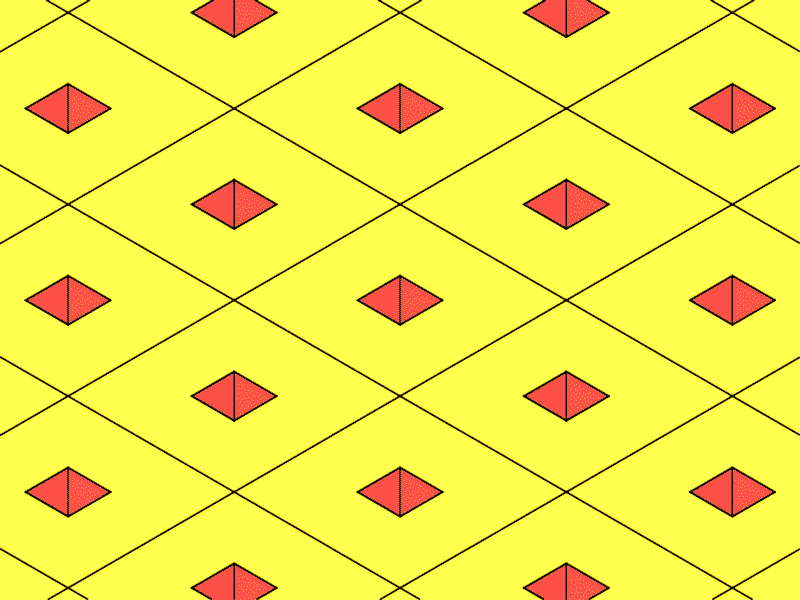

Level 0
Développeur web JavaScript full-stack
Game over
Hourra ! Vous avez débloqué toutes les compétences du
Qurriqulum
- Un jeu réalisé en HTML, CSS (avec un peu de Bootstrap) et JAVASCRIPT
- Librement inspiré par le jeu Q*bert développé en 1982 par W. Davis et J. Lee.
- Retrouvez le code source de ce jeu sur @github.com:giuseppedeponte/qurriqulum
- Ou envoyez-moi un petit message sur ma page LinkedIn, ou à l'adresse e-mail giuseppedeponte@gmail.com